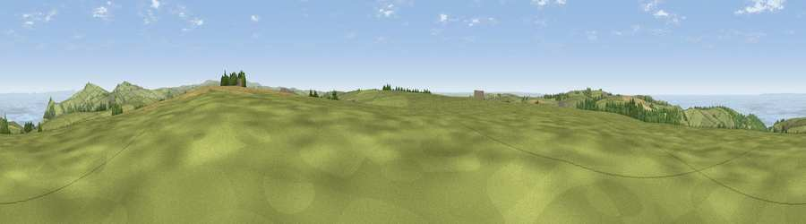

Berry Down
#1965 in England · top 10% of its area beats it · near BerrynarborThe view, rendered

A 360° render of this exact spot computed from the terrain model, tree cover and land cover — summer colours, afternoon light, calibrated against photographs of famous viewpoints. Real trees, hedges and buildings will differ in detail.
The panorama
Grey silhouette: terrain skyline in each direction (720 bearings, Earth curvature and refraction included). Dashed green: skyline with trees (+15 m) and buildings (+8 m) as obstacles. Blue strip: how far the ground is visible on each bearing.
Where the view opens
Wedge length = distance to the farthest visible ground on that bearing (vegetation-aware). Rings at 10, 25 and 50 km.
What fills the view
60% grassland · 26% water · 8% woodland · 6% cropland
Angular shares of the visible panorama (visual magnitude), not map area. Landscape diversity 0.45 (0–1 Shannon).
Key numbers
More beautiful places nearby
The staircase of upgrades: each row has a higher view potential than everything closer. Driving times are estimates from straight-line distance, calibrated against real road routing — check an actual route before setting out.
| Place | Direction | Drive | Score |
|---|---|---|---|
| Viewpoint near Berrynarbor | W · 2 km | ~6 min | 78.3 |
| Viewpoint near Berrynarbor | N · 3 km | ~6 min | 81.8 |
| Viewpoint near Combe Martin | NNE · 4 km | ~9 min | 86.9 |
| Viewpoint near Combe Martin | NE · 5 km | ~10 min | 88.9 |
| Holdstone Hill | NE · 6 km | ~13 min | 90.2 |
| The Knoll | ESE · 112 km | ~136 min | 91.0 |
51.17981, -4.04866 · source: dobih hill · position refined by local search. Computed location — check access rights before visiting.